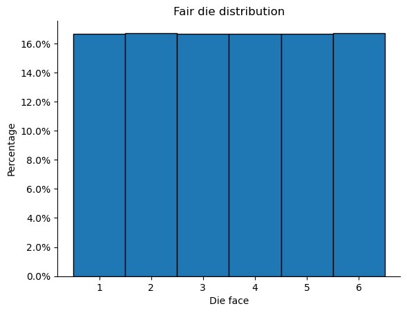
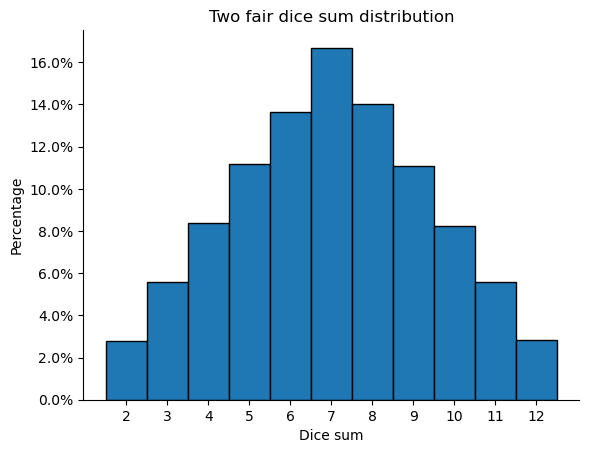
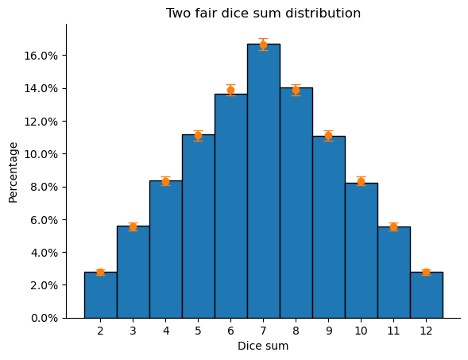
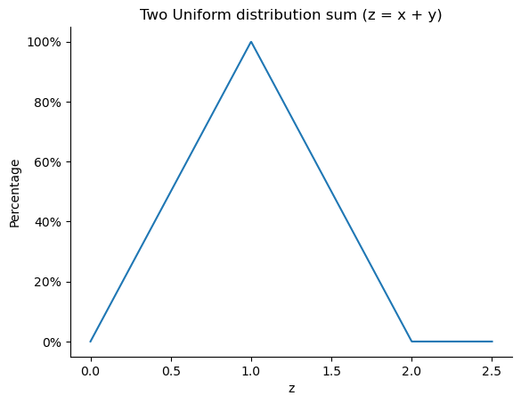
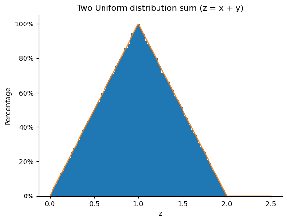

Although I am a physicist, I have no prior advanced course in statistics. However, I have faced many situations in my work where I have needed to deal with random variables. This has led me to be interested in the use of the Dirac delta function to model the distribution of a function of a set of random variables.
The Dirac delta, represented as \(\delta(x)\), is a generalized function that have the nice property of
This makes it well-suited for modeling the distribution of a function of a set of random variables, because it allows us to calculate the contrubution of a single point.
For instance, the distribution of the random variable \(\hat{Z}\), \(p(z)\) given by the equation \(\hat{Z} = f\left(\hat{X}, \hat{Y}\right)\), in which the random variables are distributed following the distribution density function \(p(x, y)\) with domain \(\Omega\) is given by
In the rest of this blog post, I will give the intuition of how the distribution of a function of random variables works, using the sum of rolling independent dice as an example. I will then present the general formula for discrete random variables, and then for continuous random variables. Finally, I will discuss the situation of conditional probabilities, sampling, and some interesting observations.
Craps
Many movies featuring cassinos the characters play a game called craps, which the points of each player comes from a result of the sum of the values of two dice. We know that the distribution of a fair die is \(1/6\) for each face, but how about two dice?
First lets check an empirital distribution of the sum of two fair dice. For fair, it means the chance of getting any of its faces are equal to \(1/6\), i.e., it is an uniform distribytion. Its distribution is shown below
import numpy as np
import matplotlib.pyplot as plt
from matplotlib.ticker import PercentFormatter
g = np.random.default_rng(0x533D)
N = 1_000_000
sample = g.integers(1, 7, size=N)
plt.hist(sample, density=True, bins=range(1, 8), align="left", edgecolor='black')
ax = plt.gca()
ax.spines['top'].set_visible(False)
ax.spines['right'].set_visible(False)
plt.title("Fair die distribution")
plt.ylabel("Percentage")
plt.xlabel("Die face")
plt.xticks(range(1, 7))
ax.yaxis.set_major_formatter(PercentFormatter(1))

As expected, each face was draw approximately \(1/6\sim 16.\bar{6}\). It is an uniform distribution. If we sum two of these uniform distributions, we get the two dice sum distribution, which is not an uniform distribution, as shown below
g = np.random.default_rng(0x533D)
N = 100_000
#
sample = g.integers(1, 7, size=(N, 2))
sample_sum = sample.sum(axis=1)
plt.hist(sample_sum, density=True, bins=range(2, 14), align="left", edgecolor='black')
ax = plt.gca()
ax.spines['top'].set_visible(False)
ax.spines['right'].set_visible(False)
plt.title("Two fair dice sum distribution")
plt.ylabel("Percentage")
plt.xlabel("Dice sum")
plt.xticks(range(2, 13))
ax.yaxis.set_major_formatter(PercentFormatter(1))

Even though the distribution of a die is uniform, the sum of two dice have a piramidal form. We can reason about this form calculating how many ways the dice can land to generate the result. For example, to get the value \(3\), the dice could be (1, 2) or (2, 1), but to get the value 2 if the two dice land in the value 1: (1, 1). All the possibilities are mapped in the table below
| Dice sum | Possible outcomes | # outcomes | percentage |
|---|---|---|---|
| 1 | - | 0 | impossible |
| 2 | (1, 1) | 1 | \(2.\bar7\)% |
| 3 | (1, 2), (2, 1) | 2 | \(5.\bar5\)% |
| 4 | (1, 3), (2, 2), (3, 1) | 3 | \(8.\bar3\)% |
| 5 | (1, 4), (2, 3), (3, 2), (4, 1) | 4 | \(11.\bar1\)% |
| 6 | (1, 5), (2, 4), (3, 3), (4, 2), (5, 1) | 5 | \(13.\bar8\)% |
| 7 | (1, 6), (2, 5), (3, 4), (4, 3), (5, 2), (6, 1) | 6 | \(16.\bar6\)% |
| 8 | (2, 6), (3, 5), (4, 4), (5, 3), (6, 2) | 5 | \(13.\bar8\)% |
| 9 | (3, 6), (4, 5), (5, 4), (6, 3) | 4 | \(11.\bar1\)% |
| 10 | (4, 6), (5, 5), (6, 4) | 3 | \(8.\bar3\)% |
| 11 | (5, 6), (6, 5) | 2 | \(5.\bar5\)% |
| 12 | (6, 6) | 1 | \(2.\bar7\)% |
| >12 | - | 0 | impossible |
| Total | 36 | 100% |
The piramidal format appears again! It appears because different outcomes can generate the same dice sum. Lets redo the graph above with the numbers we have found
g = np.random.default_rng(0x533D)
N = 100_000
#
sample = g.integers(1, 7, size=(N, 2))
sample_sum = sample.sum(axis=1)
plt.hist(sample_sum, density=True, bins=range(2, 14), align="left", edgecolor='black')
dice_sum_proba = np.array([1, 2, 3, 4, 5, 6, 5, 4, 3, 2, 1]) / 36
# Central Limit Theorem in 95% confidence
err = [3.2 * np.sqrt(p*(1-p)/N) for p in dice_sum_proba]
plt.errorbar(list(range(2, 13)), dice_sum_proba, yerr=err, fmt='o', capsize=4)
ax = plt.gca()
ax.spines['top'].set_visible(False)
ax.spines['right'].set_visible(False)
plt.title("Two fair dice sum distribution")
plt.ylabel("Percentage")
plt.xlabel("Dice sum")
plt.xticks(range(2, 13))
ax.yaxis.set_major_formatter(PercentFormatter(1))

The values from the simulation are inside the errorbars ( the errorbars is not exact, but an approximation ). So our calculation makes sense! We can reason what we have done using the kroeneker delta
for instance, for \(p(s=3)\)
The triangle
The same can be applied to continous function with
It have nice properties, since if we integrate the it in the z domain \(\Omega_z\) we have 1, as expected
Lets make an example for the sum of two continuous idependent uniform distributions \(\hat{X}\sim U[0,1]\) and \(\hat{Y}\sim U[0,1]\)
So the final distribution is given by the integral below
@np.vectorize(otypes=[np.float64])
def p(z):
if 0 < z < 2:
return min(1, z) - max(0, z-1)
else:
return 0
z = np.linspace(0, 2.5, num=1_000)
prob = p(z)
plt.plot(z, prob)
ax = plt.gca()
ax.spines['top'].set_visible(False)
ax.spines['right'].set_visible(False)
plt.title("Two Uniform distribution sum (z = x + y)")
plt.ylabel("Percentage")
plt.xlabel("z")
ax.yaxis.set_major_formatter(PercentFormatter(1))

Now, let's test if we get the same result from a simulation
g = np.random.default_rng(0x533D)
N = 1_000_000
sample = g.uniform(size=N) + g.uniform(size=N)
plt.hist(sample, density=True, bins=100)
plt.plot(z, prob)
ax = plt.gca()
ax.spines['top'].set_visible(False)
ax.spines['right'].set_visible(False)
plt.title("Two Uniform distribution sum (z = x + y)")
plt.ylabel("Percentage")
plt.xlabel("z")
ax.yaxis.set_major_formatter(PercentFormatter(1))

Great! I know I promisse miself to write more topics here. But I deviate from the task and realize that I might have to study measure theory ^^".